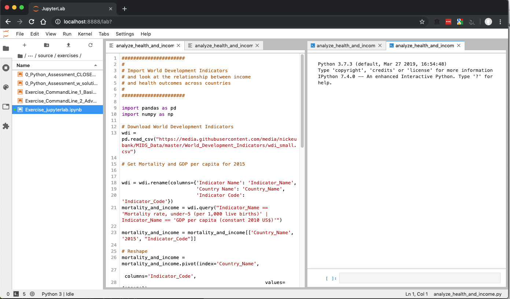

Jupyter Lab Exercises¶
In these exercises, we’ll explore a few ways of working with Jupyter Lab. If you haven’t already, make sure you’ve worked through the tutorials for installing Python and Anaconda, and for setting up R to work with Jupyter.
As we work through these exercises, we’ll be openning and working with a set of files you can download here called jupyter_lab.zip.
Replicating an RStudio Interface¶
At this point, all MIDS students have worked with RStudio, so let’s begin by replicating that familiar environment. If you have never used RStudio and don’t want to work with R, feel free to skip this exercise.
First, let’s open the file analyze_health_and_income.R (make sure it’s the .R file) by navigating to where you downloaded jupyter_lab folder using the file navigator on the left hand pane. If the file navigator not immediately visible, you can open it by clicking the folder icon in at the top of the left sidebar.
This has now opened a text editor window. To pair it with an active kernel (i.e. a running session of R), we need to right click somewhere inside the file and select “Create Console for Editor”, then choose to open an R kernel. This will open a new window with the same name as your current text file (“analyze_health.R”), but with a different icon (there should be a blue box with a cursor).
This window is your interface to an active R session, and the setup you have now is basically the same as in RStudio:

You can enter commands directly into the console window, or you can run a block of code from your text-editor window by highlighting it and hitting Shift-Enter.
Exercise 1¶
Run print('hi') by typing it directly into your console session.
Exercise 2¶
Now run the first few lines of “analyze_health_and_income.R” by selecting the text and hitting Shift-Enter.
Replicating Spyder Interface¶
I will confess I’ve never loved having the console below the text file, so let’s also explore having them side-by-side (in a scheme that looks like the scheme used by Spyder).
Exercise 3¶
Grab the tab of the analyze_health_and_income console tab and drag it to the right side of the text window:

Then you’ll get something like this:

Multiple Kernels¶
Exercise 4¶
Now let’s open analyze_health_and_income.py (note the py file suffix: this is a Python file not R file). Create a kernel for this file as well by right clicking on the text file and clicking “Create A Console for Editor”. This time select Python 3.
(By default the new console will appear along the bottom, so move it on top of the other console to organize your space:


Exercise 5¶
Now run your Python code by highlighting text and hitting shift return! Look at that, R and Python, side by side.
(Note that this code uses a package called plotnine, so you may need to first install it. At the command line, run pip install plotnine. We’ll talke more about installing packages in a later lesson).
One quirk of Jupyter Lab is that because you can have many open consoles, each text file will only send code to the console specifically created to work with that file. This is different from RStudio, where all executed code runs in one open kernel, and from Spyder, where code runs in whatever session is currently the front-most tab.
Exercise 6¶
Jupyter Lab can also be used to manage your Jupyter Notebooks. In order to get some experience working with a Jupyter Notebook, lets move the analysis we do in this analyze_health_and_income.py into a Jupyter Notebook.
First, download the starter notebook for this exercise here. (Downloading jupyter notebooks from github can be a little tricky. Click Raw, then right click and select Save Page As..., then save the file as first_jupyter_notebook.ipynb.)
Note: All jupyter notebooks carry the file suffix of .ipynb, regardless of what kernel they are running. This is a hangover from the old days when “jupyter” was “ipython”, so all notebooks were IPython Notebooks. But we still use the suffix .ipynb even if your notebook is running a non-Python kernel (like R, Julia, etc.).
Once downloaded, open the file in Jupyter Lab.
Exercise 7¶
Once open, follow the directions in the notebook to complete the exercise!